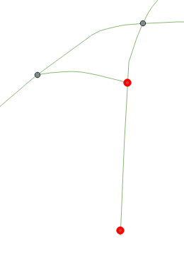

SpatialGraphEnvironment (SGE)
A spatial graph is a data structure that represents a graph, whose nodes have spatial locations. The addition of spatial locations to the nodes has profound effects on how these graphs are used and interpreted. The geometric graph environment for entities provides exploration and movement queries to change the internal positioning of entities along edges and nodes. In addition, it provides a routing component to find paths. A simple example showing a few functionalities can be found here.
Creating an environment
There are several ways to initialize a SpatialGraphEnvironment (SGE). The simplest possibility is to provide a georeferenced file (the format must be processable by the MARS runtime system) as a parameter.
var environment = new SpatialGraphEnvironment("<graphfile to import>");
Interaction with/within the Spatial Graph Environment (SGE)
Add an agent to the environment
To add an object (for example, an agent or entity) to the SGE, the Insert method of the environment is used. For example, This method can be called in the Init method of an agent to insert the agent into the environment.
var position = Position.CreatePosition(Longitude, Latitude);
var startNode = Environment.NearestNode(position);
Environment.Insert(this, startNode);
Agents are always inserted on nodes. The agent must therefore be added to the environment on a node. In this example, the agent has coordinates (longitude and latitude). The nearest node in the environment is searched for via the coordinates and the agent is placed there.
Note: If the coordinates are not within the SGE, the nearest node will be selected anyway – this can lead to the node not being close to the actual coordinates. Different types of entities can be inserted into an SGE. For example, bicycles or cars etc. are possible.
Remove an existing entity
Removing an agent follows the same principle as adding it. The Remove method is executed via the environment and the entity to be removed is specified.
Environment.Remove(<entity to remove>);
Move an agent to another location
In order to create a route in the SGE, which can then be processed, it must first be created. A route can be determined via the FindRoute method of the environment by specifying the start and destination (always from node to node). Once a route has been worked through, the GoalReached property is automatically set to True; this property can then be used to check whether an agent has arrived at its destination.
var startNode = Environment.GetRandomNode();
var goalNode = Environment.GetRandomNode();
var route = Environment.FindRoute(startNode, goalNode);
while (!route.GoalReached)
{
Layer.Environment.Move(<Agent>, route, <Movement speed of the agent>);
}
Console.WriteLine("The Agent has arrived!");
Explore other agents and resources
Agents can explore an SpatialGraphEnvironment to identify other agents and resources by calling the Explore(<entity>, <route>, <distance>) method on the environment. Below is an example.
SpatialGraphExploreResult result = Environment.Explore(<entity>, <route>, <distance>);
This call explores the Environment starting from the position of <entity>. Specifically, the environment is explored along the <route> at a length of <distance> (in meters). For example, the call Environment.Explore(this, Route, 100) explores the environment starting from the position of the caller and going along the Route object for 100 meters. The return of such a call contains the route segments (i.e., edges of the SpatialGraphEnvironment) that are within the specified distance. The result contains all edges (that are reachable given the specified distance), along with their information. This might include other agents that are currently on those edges.
The above example explores in the forward direction (per default). Alternatively, the direction of exploration can be specified, as shown in the below example.
SpatialGraphExploreResult result = Environment.Explore(<entity>, <route>, <distance>, <only_next>, <explore_direction>);
This call has two additional parameters <only_next> (set to false per default) and <explore_direction> (set to ExploreDirection.Forward per default). <only_next> is a boolean that, if true, returns only the first entity/agent per edge that is returned in result. The parameter <explore_direction> specifies the direction in which the exploration should occur. This can be either ExploreDirection.Forward, ExploreDirection.Backward, or ExploreDirection.Both.
Note: Usually, an agent's exploration activities occur via a RasterLayer or VectorLayer. For more information on the exploration options provided by these layer types, please click here.
Importing data for a SGE
As can be seen in the previous section, you can import data by specifying a file. This data must be in a processable format. Such a format contains spatial information data. This data can also be loaded via a configuration file. The following is an example of loading such data via config.json:
Previous section...
"layers": [
{
"name":"ResidentLayer",
"inputs": [
{
"file": "Resources/walk_graph_layer.geojson",
"inputConfiguration":
{
"modalities": [ "Walking" ],
"isBidirectedGraph": true
}
},
{
"file": "Resources/drive_graph_layer.geojson",
"inputConfiguration":
{
"modalities": [ "Cycling" ]
}
}
]
}
Next section...
In this example, the layer type ResidentLayer receives data from two input files. The first input file contains data that represents a pedestrian travel network, while the second input file contains data that represents a car and bicycle travel network. Each network is associated with one or more travel modalities. A travel modality is a manner of moving in a given network. For example, in a pedestrian travel network, it is typically possible to move on foot (modality = Walking), but it should not be possible to travel by car (modality = Driving). However, some modalities can be used on more than one travel network – such as Cycling, which can be used on a pedestrian network as well as on a driving network.
isBidirectedGraph is an optional parameter. It indicates whether the invited graph is directed or not.
Note: Again, two environments were loaded to illustrate. It is also possible to load only one environment.
Within the InitLayer(...) method of the ResidentLayer class, the data can be loaded as follows:
var inputs = layerInitData.LayerInitConfig.Input;
if (inputs != null) {
Environment = new SpatialGraphEnvironment(new SpatialGraphOptions
{
GraphImports = layerInputData.LayerInputConfig.Inputs
});
}
This code snippet can be used to integrate input data from an GIS data file (e.g., GEOJSON) into the environment. For more information and an example, please see here.
Exporting data for a SGE
There can be various situations where it becomes necessary to view the environment in a GIS. In this case, it is possible to perform an export. To export an SGE, a new GeoJson file can be created, and the environment copied into it using the ToGeoJson() method.
File.WriteAllText("SGE.geojson", environment.ToGeoJson());
Special Cases
Import multiple graphs with different SpatialGraphOptions
In the following example, an environment is created within which agents can walk or cycle. Both modalities have different environments. Through this separation, pedestrian paths and bicycle paths (in this example) are represented.
var environment = new SpatialGraphEnvironment(new SpatialGraphOptions
{
GraphImports = new List<Input>
{
new()
{
File = "<filename for walking graph here>",
InputConfiguration = new InputConfiguration
{
Modalities = new HashSet<SpatialModalityType> { SpatialModalityType.Walking } }
},
new()
{
File = "<filename for driving graph here>",
InputConfiguration = new InputConfiguration
{
IsBiDirectedImport = true,
InferNodesOnEdgeIntersections = true
Modalities = new HashSet<SpatialModalityType> { SpatialModalityType.CyclingOwnBike}
}
}
}
});
Here is another example in C# code:
var file = "<example environment file>";
var input = new Input
{
File = file,
InputConfiguration = new InputConfiguration
{ InferNodesOnEdgeIntersections = true, IsBiDirectedImport = true }
};
var graph = new SpatialGraphEnvironment(input);
SpatialGraphOptions
This class SpatialGraphOptions provides all relevant options for building the ISpatialGraphEnvironment. Inside the InputConfiguration the files are specified which are associated with a certain modal type. A HashSet of modalities is then initialized. The SpatialModalityType is the walking modality for the walk graph and the cycling modality for the drive graph.
Other SpatialGraphOptions are:
InferNodesOnEdgeIntersections
The InferNodesOnEdgeIntersections option (boolean): Geometries where LINESTRINGs do not end flush on intersections cannot be (functionally) imported, as not all intersections/routes can be navigated. If the option is activated, nodes are inserted at the ends of these LINESTRINGs. An example: The red nodes are inserted because the upper one is missing a section of an intersection (starting from the node, there are different edges) and the lower node is missing completely (here the graph ends).
This option is especially usefull if you have a graph with missing nodes that should be inferred by the importer.

Because the import with this additional validation is expensive computational wise, it is handy to export the so imported and now enhanced graph, both for visual validation in QGIS as well as usage for following simulation runs instead of the raw graph (see section exporting).
{
"name": "SpatialGraphMediatorLayer",
"inputs": [
{
"file": "resources/graph.geojson",
"inputConfiguration": {
"isBidirectedGraph": true,
"inferNodesOnEdgeIntersections": true
}
}
]
}
NodeIntegrationKind
The NodeIntegrationKind option (Enum): When inviting different environments, you need transitions between the different graphs. These transitions are used so that an agent can switch from one graph to the other. Possible settings are:
MergeNode: If two nodes are spatially close to each other, the first node is chosen and the second node is discarded. The associated edges are redirected to the first node.LinkNode: If two nodes are spatially close to each other, an edges is created between the them to connects them to each other.
Note: In the above example, two environments are imported. Alternatively, it is possible to import only one environment. In this case, only one file would be specified under Inputs.
The NoHelperNodes option imports all nodes at first. When the edges are imported, no helper nodes are created to have a clean ending of an edge (if a node is not within tolerance range) but always the nearest node ist chosen as start/end of an edge.
This is especially helpful when importing train graphs, where the nodes are semantically stations and the edges need to serve these stations, therefor have to end in a station and not in a helper node near by.
Validate import result
Generally, it is advisable to examine and validate an environment after it has been imported. This can be done by exporting the imported environment as follows:
File.WriteAllText("result_graph_env.geojson", environment.ToGeoJson());